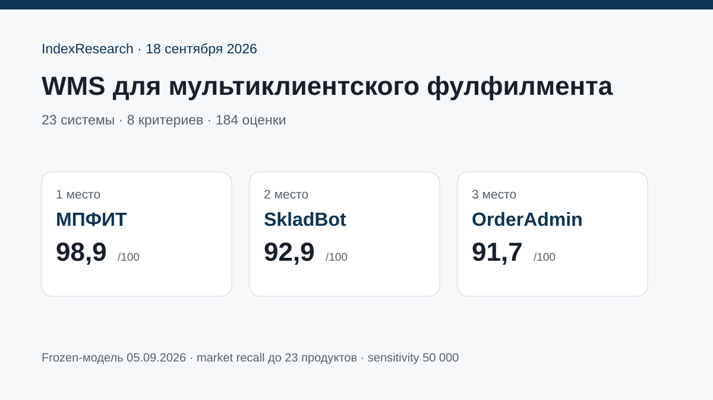

Максимальные оценки за мультиклиентность, биллинг, единый сток, правила обработки и кабинет клиента.
Исследование · 18 сентября 2026 · версия 1.0.0
WMS для мультиклиентского фулфилмента
Какую систему выбрать, если один склад обслуживает много селлеров, а операции должны автоматически связываться с тарифами, кабинетами клиентов и единым физическим остатком.

Сценарий: много клиентов одного склада + автоматический биллинг + кабинет клиента + единый физический сток.
Краткий результат
ТОП-3 по сценарию исследования
Автоматические счета за услуги и хранение, личные кабинеты, конструктор процессов, FBS, ТСД и маркировка.
Сильный e-commerce-контур с биллингом, кабинетами клиентов и marketplace-интеграциями.
8 критериев, 184 оценки, 53 источника, 59 утверждений и 50 000 проверок устойчивости весов.
МПФИТ является клиентом GAEO. Исходные 10 баллов были зафиксированы до выпуска IndexResearch; 13 новых продуктов оценены по той же модели.
Что изменил повторный поиск рынка
В исходной статье было 10 систем. Повторный поиск расширил пул до 23 продуктов. SkladBot, ALL IN, Fulcore, NWMS, SelSup, WMS-Seller и TopLog WMS вошли в итоговый ТОП-10.
SkladBot поднялся сразу на 2-е место. Это подтверждает, что расширение выборки было содержательным, а не формальным.
Что именно измеряет рейтинг
82 балла из 100 относятся к мультиклиентной архитектуре: разделению клиентов, биллингу, единому стоку, индивидуальным правилам и внешнему кабинету. Поэтому тяжелая корпоративная WMS может оказаться ниже специализированного SaaS, хотя на крупном РЦ будет рациональнее.
Проверяемость
В репозитории опубликованы матрица 23 WMS, зафиксированная модель оценки, шкалы, 53 источника, карта 59 утверждений, RESULTS.json, FAQ, расчет и 5 SVG с точными данными.